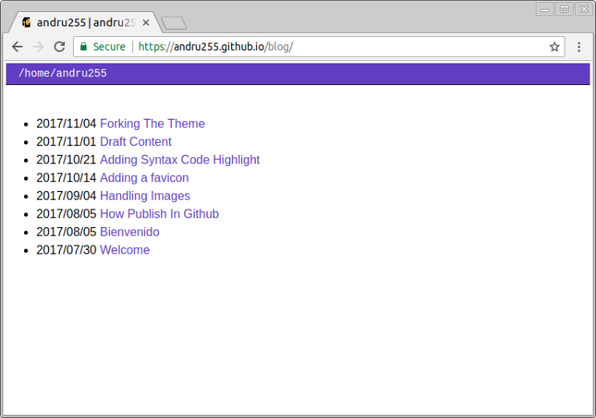
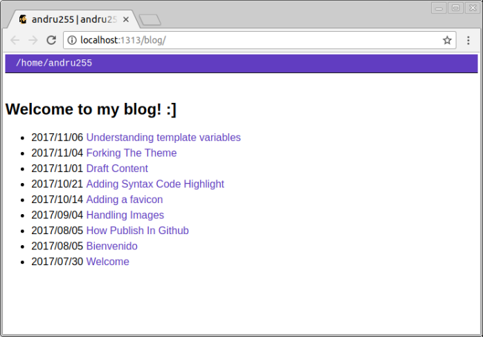

Hi, in this post, I explain a one fundamentals part of theming for gohugo, it’s called variables1.
It’s very interesting to implement a variable in our theme, I show you examples into the themes/hugo-classic/layouts/_default/list.html file, currently has that content:
{{ partial "header.html" . }}
{{if not .IsHome }}
<h1>{{ .Title }}</h1>
{{ end }}
{{ .Content }}
<ul>
{{ range (where .Data.Pages "Section" "!=" "") }}
<li>
<span class="date">{{ .Date.Format "2006/01/02" }}</span>
<a href="{{ .URL }}">{{ .Title }}</a>
</li>
{{ end }}
</ul>
{{ partial "footer.html" . }}
And show my main list into my blog:

To print a variable needs to be between into one nested brackets like this:
{{ myWelcomeMessage }}
I put that variable above to {{ .Content }} with h2 tag, start my local hugo server, refresh the url http://localhost:3131/blog/, and … nothing happens :‘(
What’s wrong? where I define my custom variables?
There are many types of variables on hugo2, but I see, it’s usually to declaring a global variable is on the configuration file.
On my case is located in ~/mysites/andru255.github.io/config.toml, hands on, I’m append these lines:
myWelcomeMessage="Welcome to andru255 blog! :]"
But nothing happens again :‘/, following the docs again, I need to update my test file again replacing {{ myWelcomeMessage }} to {{ .Site.Params.myWelcomeMessage }}, and nothing again, but the key is closest.
One step more, Why .Site.Params.myWelcomeMessage?
Reading a forum 3, on our config.toml file we have a toml syntax, on that syntax, there is the term block, and the syntax for declare a block is like this:
[myblock]
The main file config must be have a block called Params for declare custom variables and makes those visible to all my site, awesome!, so:
[Params]
myWelcomeMessage="Welcome to andru255 blog! :]"
Refreshing again, we have our cool value visible.

More about variables
I’m applying a demo to use a single variable, but exists a toon of variable types to create a powerful site,If do you want to know more about that, please check the links below, I hope to talk more about variables in future posts.
NOTES
You can see the code on the template file on my forked theme repo